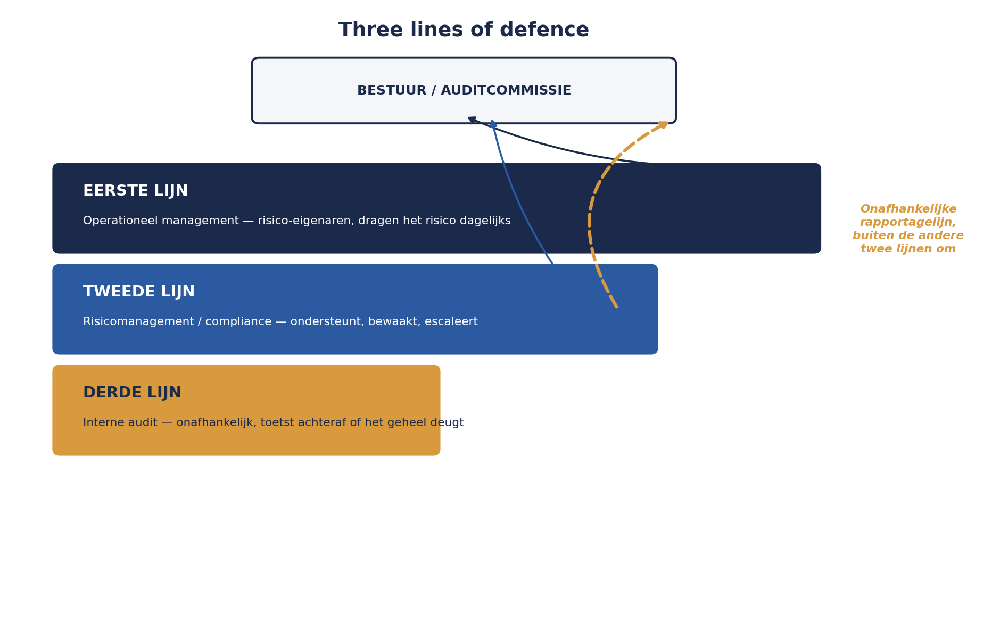

Deel 9 — Rollen en governance: wie draagt dit structureel?
Niveau 1 — Fundament · Slidedeck (26 slides)
Slide 1 — Titel
Risicomanagement Deel 9 — Rollen en governance: wie draagt dit structureel?
Niveau 1: Fundament
Slide 2 — Terugblik
Context. Register. Escalatiedocument.
Compleet — voor dit ene project.
Slide 3 — Sanne’s grotere vraag
Niet: hoe beheers ik dit project?
Hoe zorg ik dat dit overal gebeurt, zonder dat ik overal bij hoef te zijn?
Slide 4 — WGP 2.0: drie rollen, niet ingevuld
Geen risicomanager. Geen eigenaarschap. Interne audit pas achteraf, via de post-mortem.
Slide 5 — Drie rollen
Risico-eigenaar — draagt het risico dagelijks Risicomanager — ondersteunt en bewaakt Interne auditor — toetst het systeem, achteraf
Slide 6 — Risico-eigenaar
Risicomanagement is onderdeel van hun werk.
Niet: “de mensen die het voor hen doen”.
Slide 7 — Risicomanager
Sanne’s rol.
Instrumenten. Kwaliteitsbewaking. Eigen rapportagelijn.
Slide 8 — Interne auditor
Onafhankelijk. Achteraf.
Toetst niet één risico — toetst het systeem.
Slide 9 — Three lines of defence
Eerste lijn — operationeel management Tweede lijn — risicomanagement/compliance Derde lijn — interne audit
Slide 10 — Figuur 9-1

Slide 11 — Eén regel die alles draagt
De derde lijn rapporteert nooit aan wie zij controleert.
Slide 12 — Wat er anders gebeurt
Verlies van onafhankelijkheid = verlies van functie.
Slide 13 — Opdracht 9.1 — plenair, 15 minuten
Vijf activiteiten. Welke lijn?
Slide 14 — De verleiding
“Sanne beslist toch gewoon wat er met dit risico gebeurt?”
Slide 15 — Waarom dat averechts werkt
De eigenaar trekt zich terug: “dat is nu haar zaak.”
Precies wat het eerste-lijns-principe wil voorkomen.
Slide 16 — Kernzin 6
De risicofunctie beslist niet namens de risico-eigenaar — zij zorgt dat de juiste vraag op tafel komt, op het juiste moment, bij de juiste persoon.
Slide 17 — Mandaat versus beslissingsmacht
Mandaat — het recht om te agenderen, bevragen, escaleren Beslissingsmacht — het recht om de uitkomst te bepalen
Slide 18 — Wat Sanne wél kan
Sessie beleggen. Herziening vragen. Escaleren.
Slide 19 — Wat Sanne niet kan
Zelf de respons kiezen. Zelf een actiehouder aanwijzen.
(Vooruitwijzing: deel 28, wat als je mandaat is uitgeput?)
Slide 20 — Opdracht 9.2 — tweetallen, 20 minuten
Vier bevoegdheden. Mandaat of beslissingsmacht?
Slide 21 — Governance van het proces zelf
| Document | Wie stelt vast |
|---|---|
| Context/criteria | Stuurgroep |
| Register | Eigenaren vullen, Sanne bewaakt |
| Escalatiedocument | Stuurgroep |
Slide 22 — Opdracht 9.3
Bouw dezelfde tabel voor je eigen organisatie.
Slide 23 — Sanne’s positionering
Rapporteert rechtstreeks aan de directie.
Geen hiërarchische macht — wel het mandaat om te escaleren.
Slide 24 — Precies wat er ontbrak
Niemand met het mandaat om onafhankelijk te signaleren.
Niemand die rechtstreeks naar de top kon, zonder eerst toestemming te vragen.
Slide 25 — Niveau 1: inhoudelijk compleet
Negen delen. Vijf faalpunten, allemaal gesloten. Zes kernzinnen.
Slide 26 — Voor deel 10
Meenemen: al het eigen materiaal uit deel 3 t/m 9
Deel 10: examentraining CRMF-format + capstone — de afsluiting van niveau 1.